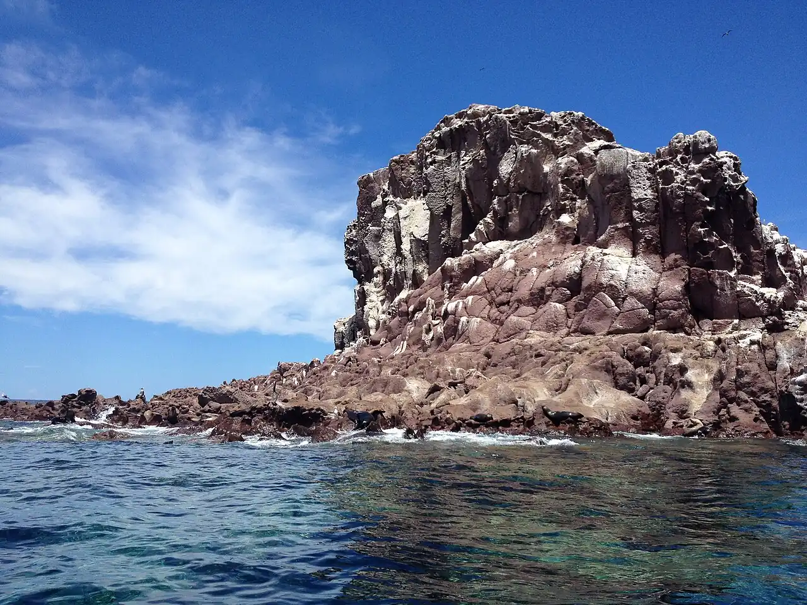

Los Islotes
La Paz, Mexique · snorkeling, plongée

Îlots rocheux au nord de l’île Espíritu Santo, dans le golfe de Californie, qui abritent une grande colonie d’otaries de Californie. On y nage avec masque et tuba ou en plongée au milieu des jeunes otaries, souvent très curieuses.
- Lieu
- La Paz, Mexique
- Niveau
- Intermédiaire
- Activités
- snorkeling, plongée
- Type d'eau
- Mer / océan
- Coordonnées
- 24.60, -110.40 (position approximative du secteur)
Dangers à connaître
- Les mâles adultes défendent leur territoire : ne t’approche pas des rochers de la colonie.
- Pleine mer avec houle et courant ; la traversée peut être agitée quand le vent du nord souffle en hiver.
- Parc national marin : règles d’accès et périodes de restriction à vérifier localement.
Le conseil d'Ocean Buddy
Pars avec un opérateur autorisé depuis La Paz, reste à distance des rochers de la colonie et laisse les otaries venir à toi, sans jamais les toucher.
Ouvrir dans Ocean Buddy Télécharger sur l'App Store
Source : Fiche Ocean Buddy · septembre 2026 · à vérifier localement.